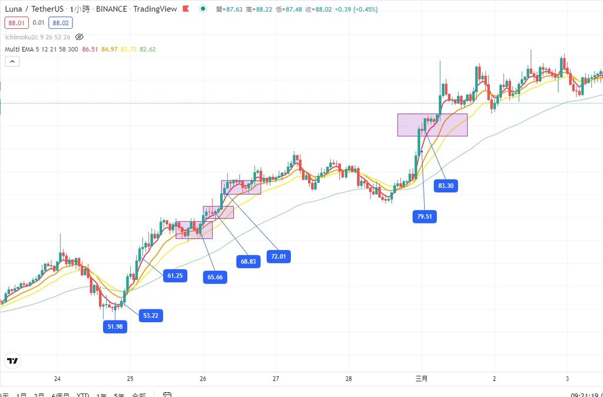
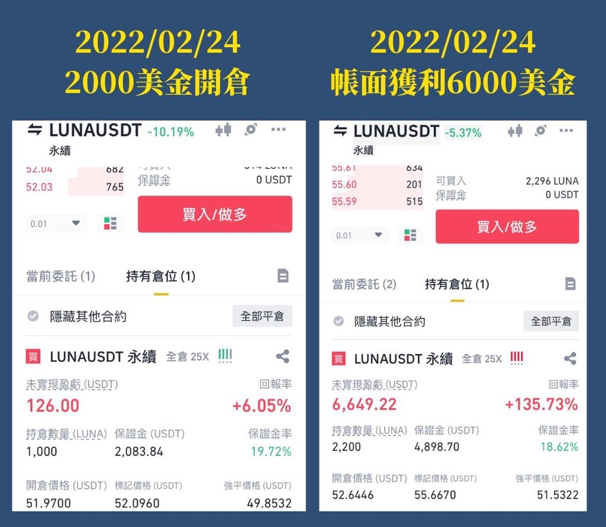
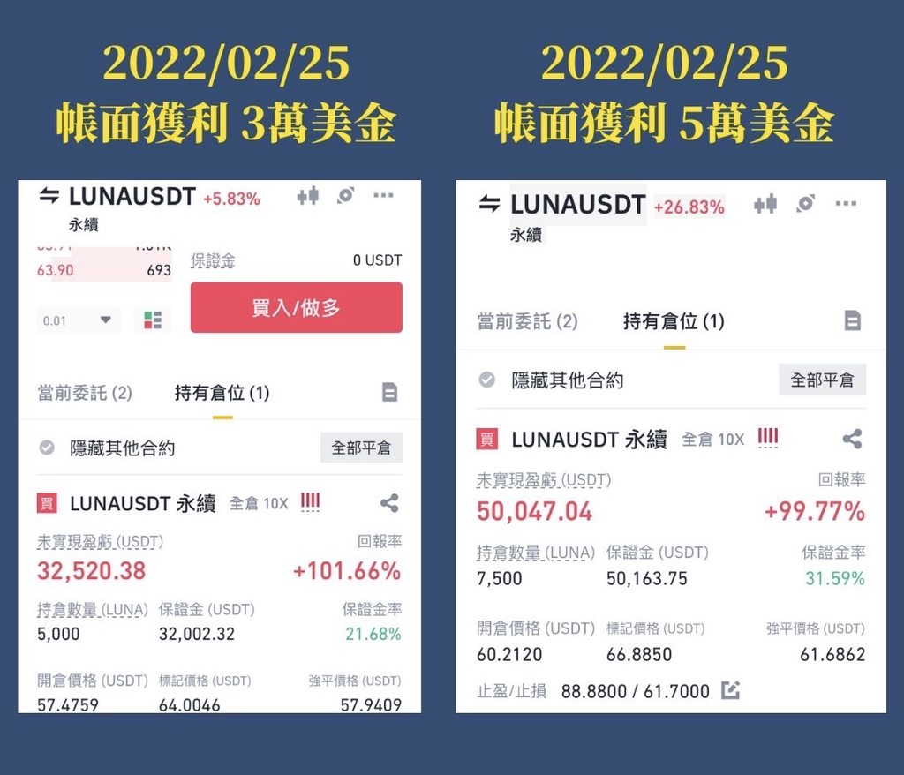
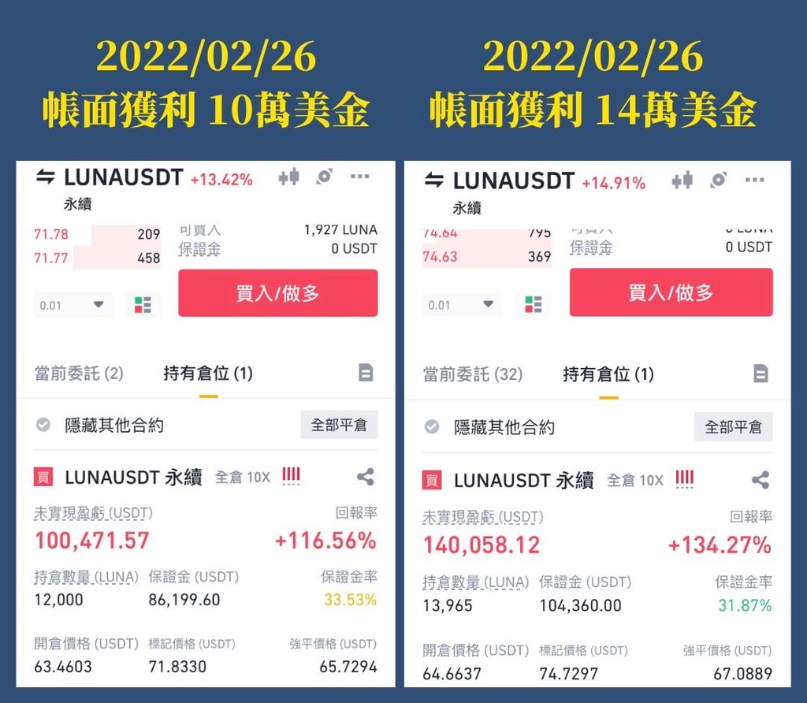
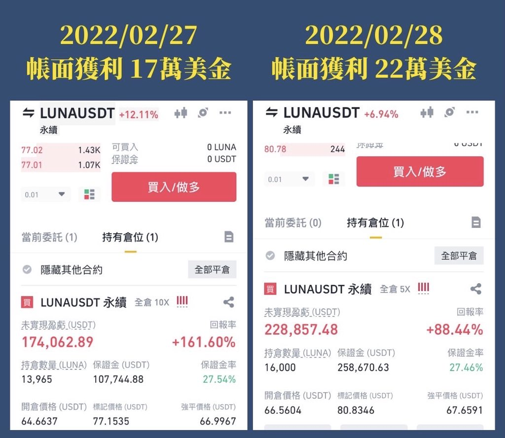
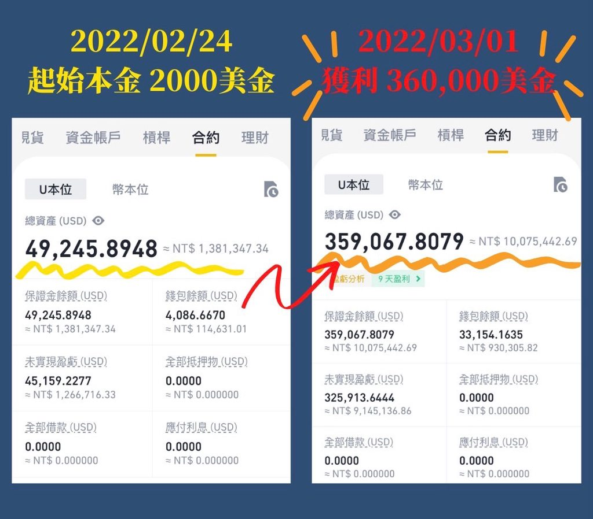

交易的行為與思維分享
https://disp.cc/b/DigiCurrency/eIYg
各位好久不見，這次是用約10萬經過五天左右變為約1000萬
標的物是Luna幣（也不用問我這是什麼，因為我也不知道她能幹嘛）
我只做技術派的價格區間獲取，跟隨趨勢來賺錢
這次比起之前獲利金額算是較小（前面的文章30萬變3000萬），但其實倍率是差不多約單 筆翻了100倍
先上對帳單圖分享這次做單的技術，後續再提供來信的問題回覆與交易思維






有幾個重點可以提供參考
1.仍然都是一貫的手法，原則以抓到大波段的起漲點後，透過未實現獲利持續加碼
將成本與強平價格墊上去，最終強平價格高於開倉，代表即使被強平仍然是賺錢的。
2.持續強調我的交易策略：做標的只做強勢標的。
市場資金不會完全瞬間歸零，會有其動態平衡，聰明錢會自己往強勢標的集中，
跟著強者走會比跟著弱者取暖有用（不只交易，人生也是這樣），
不只上一次讓我大賺的SOL到這次的LUNA都是同樣道理。
3.不是每個人都能經歷獲利回吐處之泰然的階段，有跟單的、有看戲的，
在我未實現獲利從+550萬回吐到+250萬時，絕大部分的人都是受不了而趕緊出清，
但，我原本的風控機制已控制在可以接受的範圍（最差就是+100萬收場），
為何還要隨之起舞？
4.為了達成心理目標（10萬變1000萬），所以在最後關頭用獲利再度加碼BTC
（其實是交易所限制我再加碼原標的LUNA了，不然這張單破2000萬沒問題）。
原因是如果是萬物齊漲，那我至少要抓到平均以上的漲幅，
所以就選中規中矩的BTC來做，屬於將上述第一點更進化。
以下分享持續收到的問題回覆，提供各位參考
當然，還是要講那句老話，能不能賺錢靠的是心態，絕非技術
「成功的交易(員)，80%靠心態，技術僅佔20%，甚至不到」
1.做短做長哪個好？
其實要看自己個性，能賺錢的當然都是好方法，
管你用無限攤平大法還是高頻tick交易，
不要看人短線做得厲害就想做短，看人長線賺大錢就決定要做長線，
找出自己適合吃的餡，之後根據此策略再去進化，
而不是一直在做反覆檢討系統的可行性報酬率，該檢討的是「自我適性的策略」。
但我直接告訴各位，一般普通人要達到財富累積的手段絕對是依靠趨勢的大波段來積累，
絕對不是靠著短進短出達成，即使有，那都是非常短暫且非常少數，
如果您不相信，您可以持續短沖當沖個幾年試試，絕大部分都是賠了資產又賠了身心。
（我以前也做過短沖，那是非常痛苦操作，分k越看越小，搞得連吃飯睡覺都無法安心）
另外也可以去思考邏輯，如果您連操作一兩次的大波段都沒辦法吃到豐厚獲利，
又怎麼期待自己能夠在短線快速決策中持續做對方向，
很多人很愛抓轉折，越抓越容易骨折、財富打對折。
2.看盤要看什麼？
許多人常掛在嘴邊說要專心看盤，
但其實，如果做的是趨勢，並不需要因為盤中的些微震盪走勢而緊張兮兮，
要跟上的是海裡潮流，而不是表面波浪，所以話說回來，天天看盤有必要嗎？
看了看出些什麼東西？還是隻是安慰自己有「認真做起看盤」這件事，
絕大部分都是在「祈禱」與「取暖」而已，不是嗎？
交易就是決定下手後，是輸是大贏交給上天運氣去決定，
能做的只有控制住虧損、控制住情緒，不要太主動介入原先的交易，
這樣檢討起來才有意義，做交易到最後其實只是期望值的博弈而已，
如我這筆單最後的進出階段也不是技術分析了，
而是我能忍受最差就只賺100萬，但我有機會拚1000萬時的取捨罷了。
再說了，你的金額可以大到影響趨勢嗎？
如果不能，那你到底在看什麼盤讓自己緊張兮兮，
反正都是在賭博，倒不如去賭場還能享受美食、美女、美好氛圍吧。
3.為什麼不做空？
長期追蹤IG的可以發現我很少做空，即使有也都是非常短暫猜空，且金額會縮得非常小。
做空是極度危險的，看看近期的瘋狂鎳與石油，縱然您天生神力賺了一輩子，
但是遇到系統性風險、流動性風險時，嘎空是無上限的，
做空可以把您的資產在一夕之間全部化為烏有，做多了不起就歸零損失100%。
試想想，既然普遍都說做多賺得多，做空賺得快，若要非選一個，還是選「賺得多」吧？
所以前陣子常有私訊問候「做多賠錢爽不爽」、「北七，熊市幹嘛不做空」，
我都笑笑回應，如果空頭我都能尻百萬千萬了，還會怕熊市？
況且，還沒看到做空爆賺的單子，為什麼？因為空頭走勢不會一次到底，
加空、追空遇到盤中嘎空被逼得吐出倉位與回補，整體效益其實非常的低。
4.為何選擇做波段卻常常遇停損？
做波段者目標是享受豐厚的獲利，但在此之前要認清一件事，
絕大部分的走勢都有七八成時間在盤整，
也就是說並不可能有人或有標的可以一直做到大波段，有的話就是詐騙。
如同我這筆單全壘打之前，也是不停的停損
（持續約虧損200多萬，這都有在IG提到，我也會賠錢），
遇到盤整的撞牆期靠的是資金控管與避免心態崩壞，
首先要有良好的的資金控管才能避免心態崩壞，
可透過縮小倉位、資金部位、槓桿、下單頻率等方式來達成目標，
在逆風的時候要先保護自己的城池，否則順風來臨時，你已無銀彈可以逆轉勝。
5.盤感如何培養？
「感覺是最沒根據的策略」
無論你是用基本面EPS、技術面K棒、籌碼面數據做為交易系統，
至少這些都是客觀的存在事實，再經由交易系統消化後執行進出決策。
但很多人都靠「感覺」在交易，要戰爭了感覺要跌了，要和談了感覺要噴了，
甚至還會感覺主力莊家大戶該怎麼做，
主力莊家大戶們都在看電影、逛街、吃美食、做SPA、陪家人朋友玩樂，
並不會去在意1分、5分K等極小的跳動好嗎？
感覺會因為當下的氛圍而受影響，同一件事在不同環境下的感覺又會不一樣，
做交易最忌諱用感覺做，「我都感覺到你感覺快輸光的感覺了」。
其實還是講得很亂我知道，想到甚麼講什麼，
交易沒那麼困難：化繁為簡，持盈保泰，穩定累積，財富自來。
最後澄清幾點
1.本人僅有PTT帳號與小編經營IG，並無其他社團TG等，更無與任何交易所合作，
亦無發行NFT，請勿被來源不明的連結受騙。
2.實在不用連續虧損時來私訊騷擾，獲利豐厚時來討好，
就算這都是運氣好了，連續好運氣也是一種實力了吧(?)
3.先前說要發奶茶，避免造成疫情的關係改為持續捐款，希望社會能更好
偏好捐款給不能控制出生環境的弱勢孩童們
因為孤苦老人的背後，並不知道是不是年輕時胡亂凹單造成的